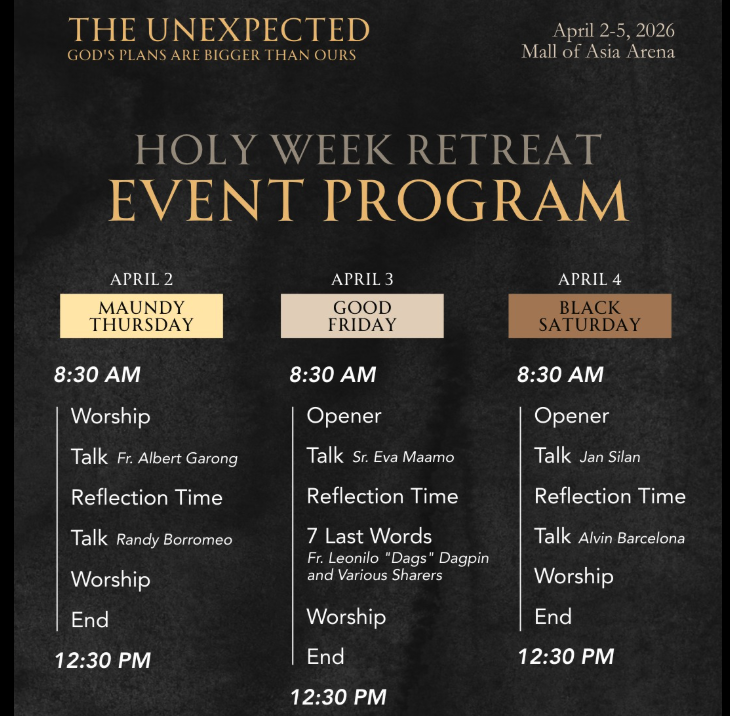
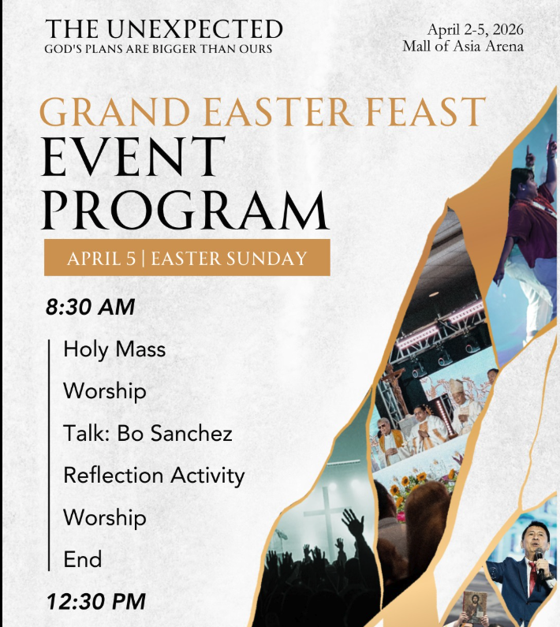

Retreat Overview
A quiet guide for the four days ahead
This site will become a living retreat journal as each day unfolds. For now, it gathers the full program so you can move through Maundy Thursday, Good Friday, Black Saturday, and Easter Sunday with one clear home for the schedule.
Program Poster
The rhythm of the retreat, seen at a glance
The printed program anchors the site's visual language so the experience online still feels like the retreat you're stepping into at the arena.

April 2
Maundy Thursday
An opening morning of worship, reflection, and two talks to begin the retreat with attention and surrender.
8:30 AM
12:30 PM
- Worship
- Talk: Fr. Albert Garong
- Reflection Time
- Talk: Randy Borromeo
- Worship
- End
April 3
Good Friday
A day centered on stillness and the Seven Last Words, held by reflection and shared witness.
8:30 AM
12:30 PM
- Opener
- Talk: Sr. Eva Maamo
- Reflection Time
- 7 Last Words: Fr. Leonilo "Dags" Dagpin and various sharers
- Worship
- End
April 4
Black Saturday
A quieter middle space in the retreat, shaped by two talks and room for interior reflection before Easter morning arrives.
8:30 AM
12:30 PM
- Opener
- Talk: Jan Silan
- Reflection Time
- Talk: Alvin Barcelona
- Worship
- End
April 5
Easter Sunday
The retreat opens into celebration with Holy Mass, worship, a talk from Bo Sanchez, and a closing reflection activity.

8:30 AM
12:30 PM
- Holy Mass
- Worship
- Talk: Bo Sanchez
- Reflection Activity
- Worship
- End